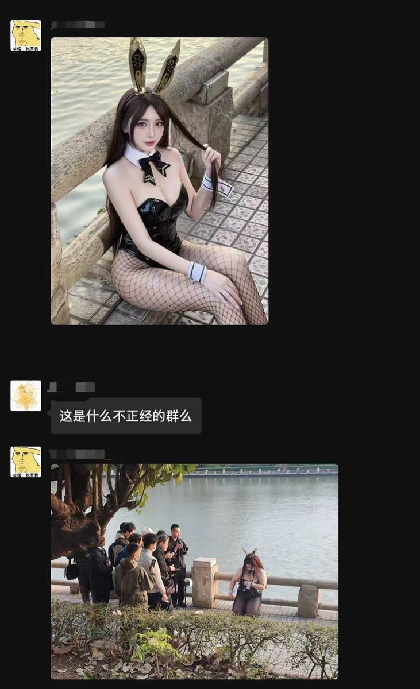
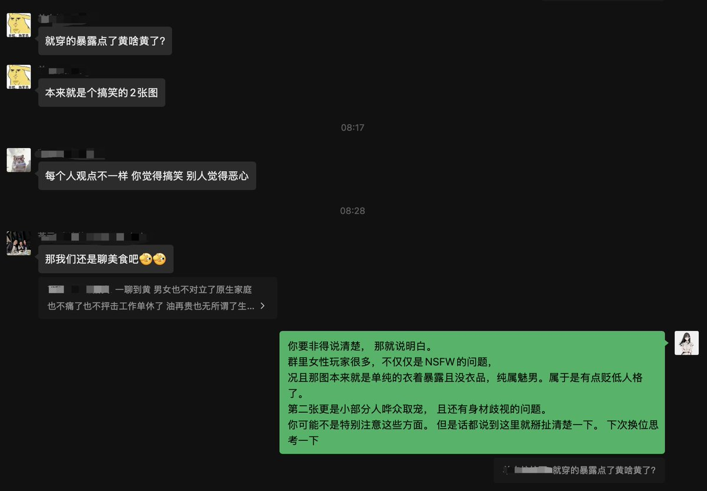
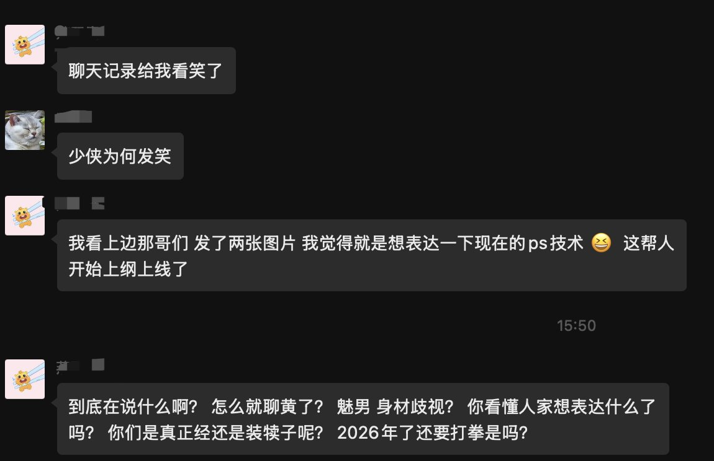
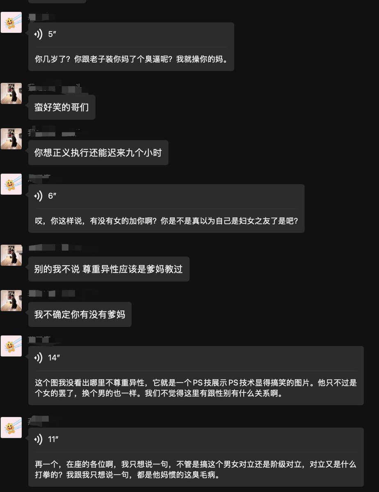

432InfantryRegiment
@432Ifantrygroup
@aliciahan007 他说你打拳，那怎么叫不打拳呢？“换个男的也一样”。原来在他眼里不打拳的意思是平等的侮辱所有人？
不过我不觉得你容忍他是做对了。作为一个能一秒钟切换战斗脸的人，比说脏话他绝对比不过我，我能骂到他怀疑人生；或者干脆一个举报也能给他抬走。
我们面对手持沾屎拖把的人，不能光是躲，那就如他愿了




污妖王的远征
@aliciahan007
作为一个身在欧洲、每天和逻辑代码打交道的孩纸，我怎么也没想到，自己有一天会在一个武侠游戏群里，被一个赛博巨婴指着鼻子骂“#打拳”。以前我觉得，互联网上最让人头疼的是杠精。但今天在游戏群里的一场遭遇，让我确诊了一种新型的恐惧：我生理性地害怕那些随时随地寻找借口“引爆”自己的人。 https://t.co/5MLjt4AYAa